Base
▼Base_Gaussian (Normal, mu, 3 runs)
Pooled Chains results
Wasserstein Distance

Glass’s Δ WS
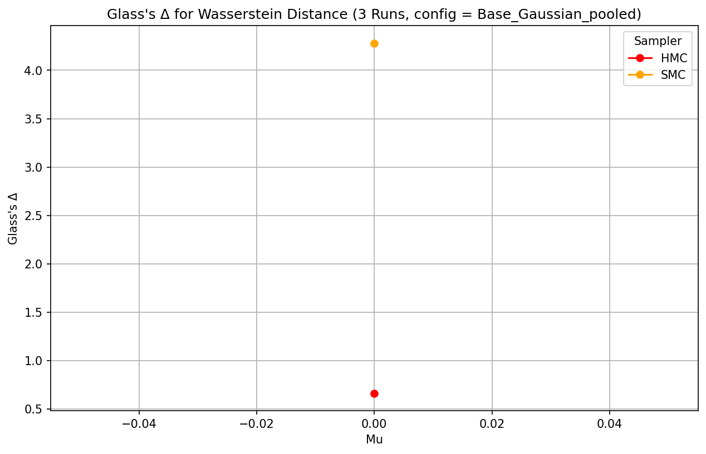
Mmd Rff
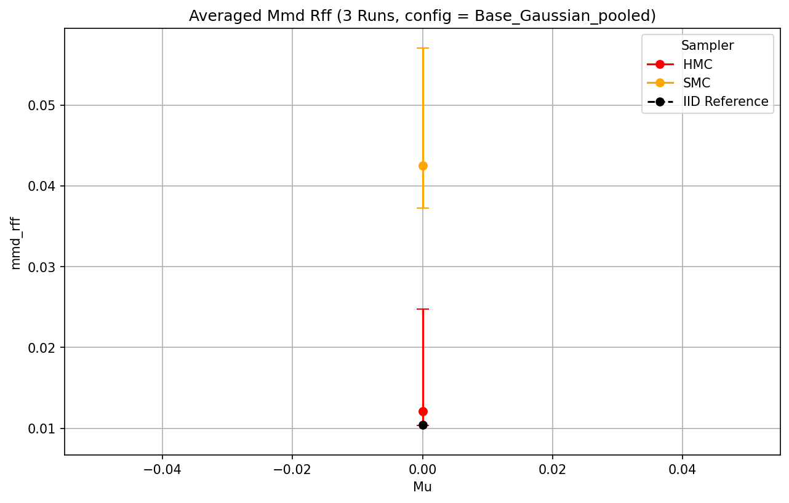
Glass’s Δ MMD
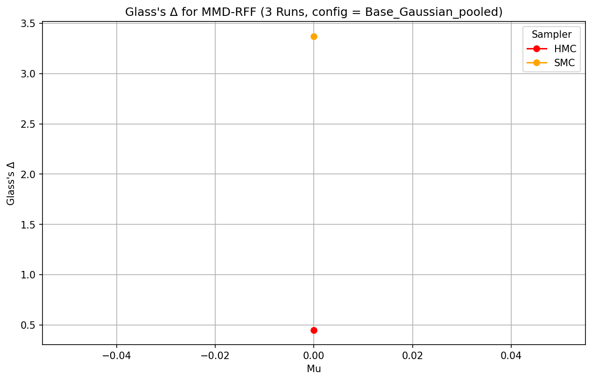
R Hat
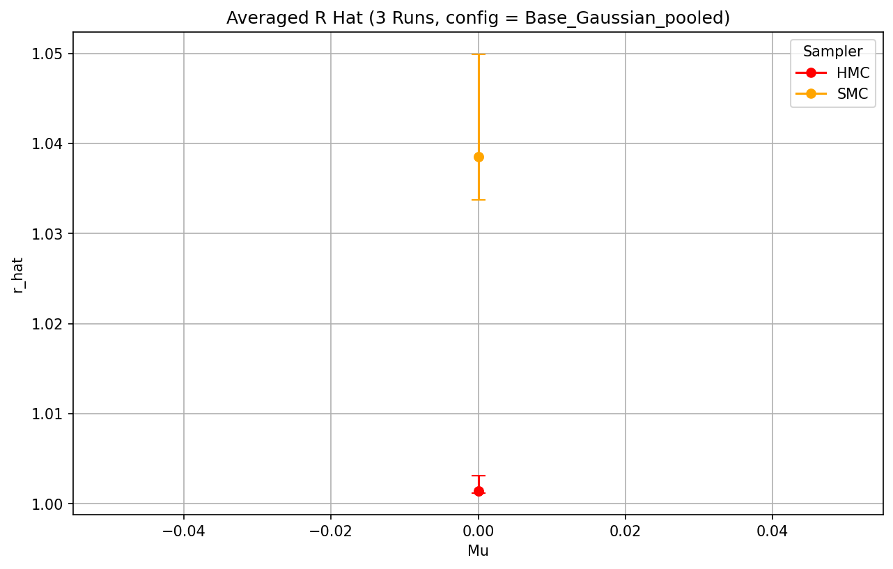
Ess
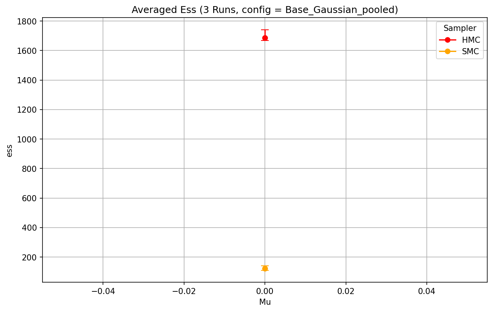
Runtime
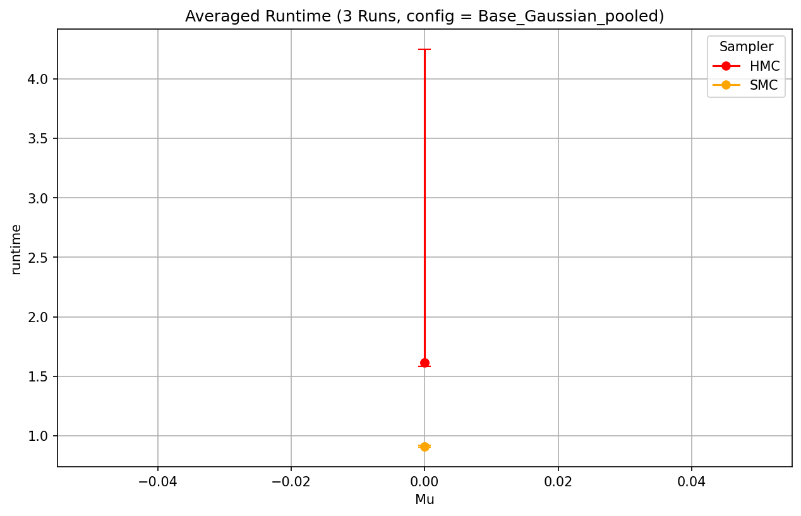
One Chain results
Wasserstein Distance
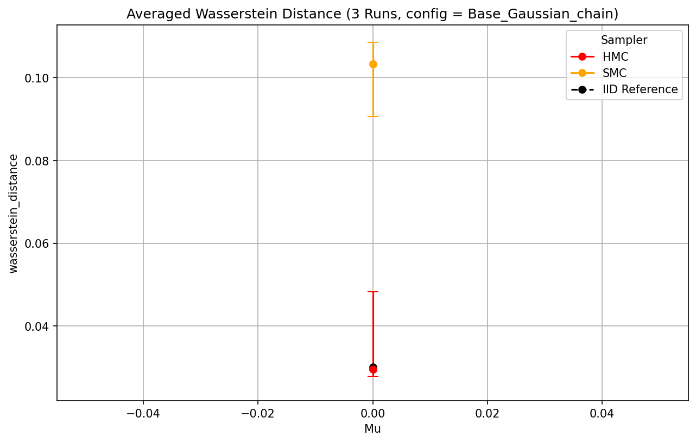
Glass’s Δ WS
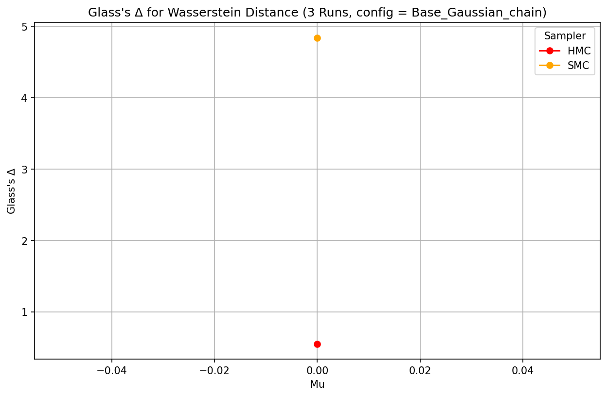
Mmd Rff
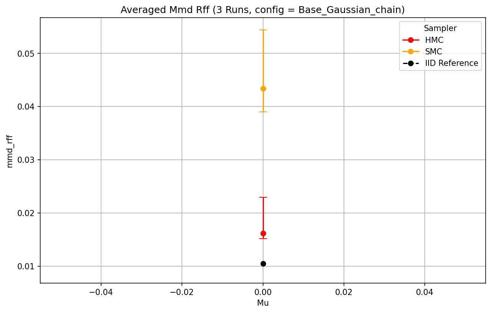
Glass’s Δ MMD
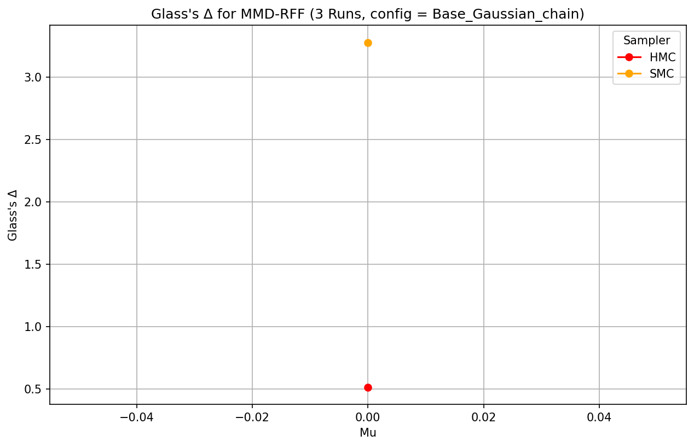
R Hat
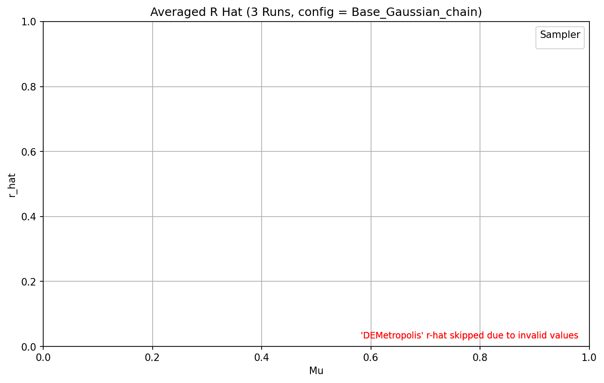
Ess
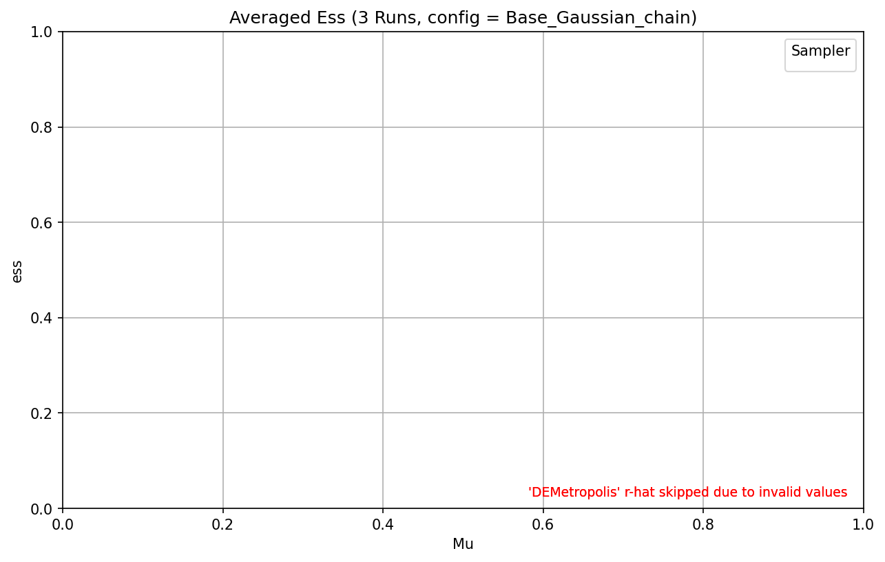
Runtime
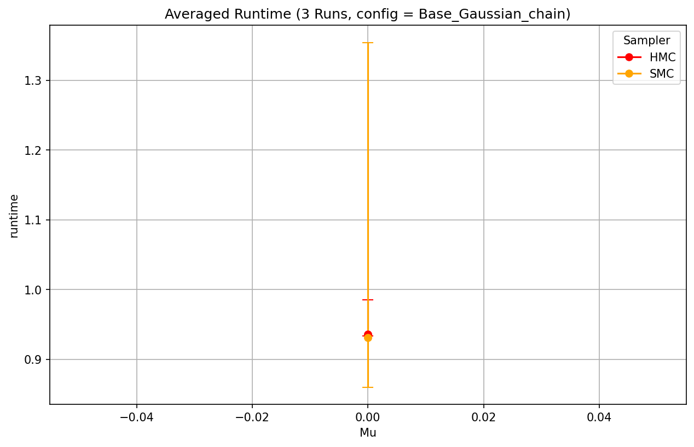
KDE + Init Plots
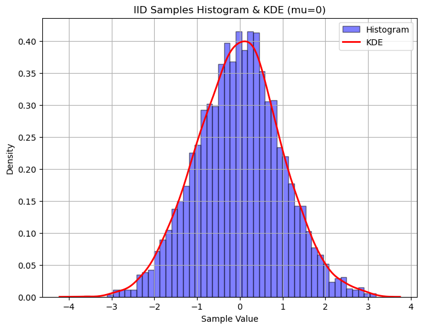
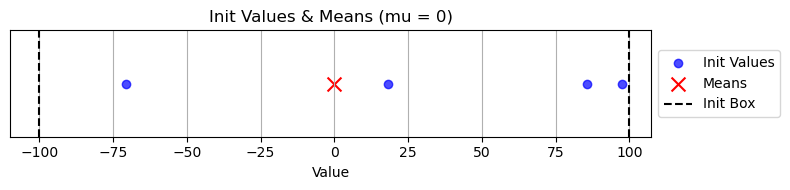
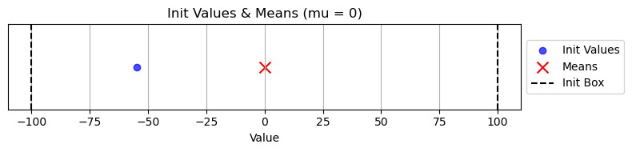